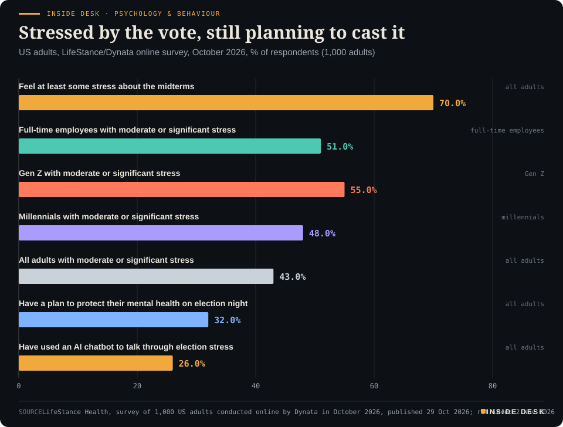
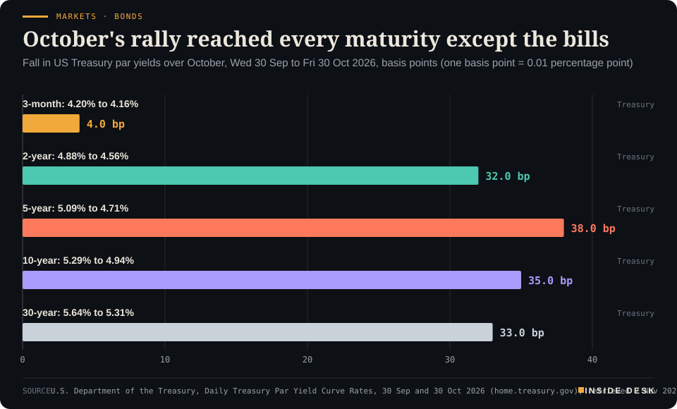
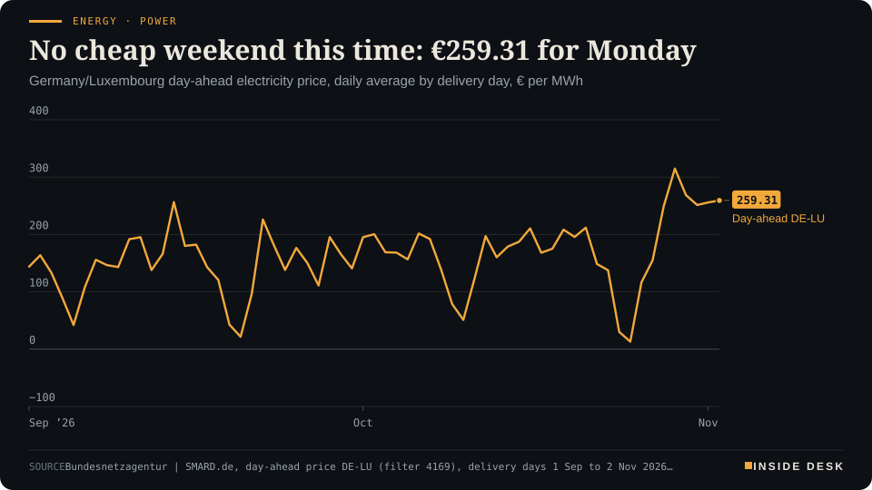
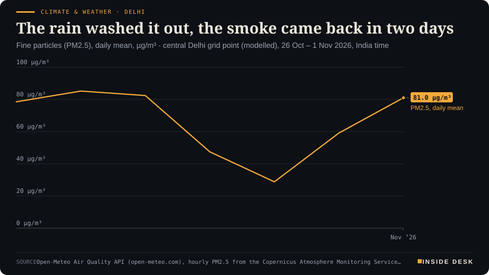
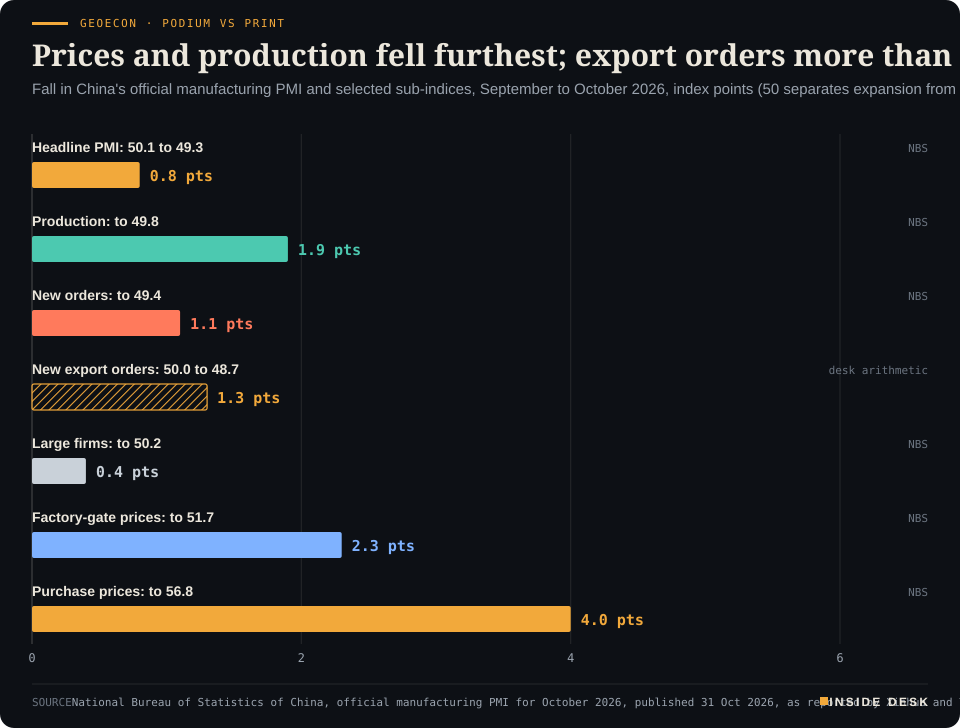

Inside Desk ePaper, Morning ePaper · Mon 2 Nov 2026
Monday, 2 November 2026Always free
Inside Desk
Morning ePaperAvailable 06:30 CET · Berlin
Lead · Psychology & Behaviour
On the eve of the US midterms, the anxiety is about the result. The machinery that produces it is trusted more than the mood suggests.
America votes on Tuesday: seven in ten adults say the vote stresses them, while nearly eight in ten voters trust the in-person count. Elsewhere, the ten-year Treasury yield ended October 35 basis points lower, German power costs €259.31 a megawatt hour for Monday, and Delhi's smog season opened on schedule.
Most Americans are anxious about who wins on Tuesday, and most still trust the people who will count the votes; the second fact is the one that matters.
Geo-economics · p. 5
Markets & Macro · p. 6
Energy & Industry · p. 9
Climate & Weather · p. 15
The day in one sentenceMost Americans are anxious about who wins on Tuesday, and most still trust the people who will count the votes; the second fact is the one that matters.
ContentsInside Desk · Morning ePaper2 November 2026
America votes on Tuesday: seven in ten adults say the vote stresses them, while nearly eight in ten voters trust the in-person count. Elsewhere, the ten-year Treasury yield ended October 35 basis points lower, German power costs €259.31 a megawatt hour for Monday, and Delhi's smog season opened on schedule.
11 edition pieces · 11 desks · Available 06:30 CET, 2 November 2026
22 ePaper extras, added , 2 November. They appear only in the ePaper and carry their own time.
17:30 Evening ePaper, updated live until 22:30 with an “Updated” time and a Latest page
Sun 10:00 The Sunday Magazine
Berlin time. Every issue is free.
How to read it
Swipe, use the arrow keys or the page strip. Tap any headline for the reading view. Press / to search, t for contents, +/− to zoom. Download the PDF.
LeadInside Desk · Morning ePaper2 November 2026
Psychology & Behaviour · Lead · 4 min
On the eve of the US midterms, the anxiety is about the result. The machinery that produces it is trusted more than the mood suggests.
Tomorrow Americans vote in the midterm elections, and the feeling in the room is not hard to read. In a survey of 1,000 US adults conducted online by Dynata for LifeStance Health in October, 70% said they felt at least some stress or anxiety about the vote on 3 November, and 43% reported a moderate or significant amount1. That is the number that will be quoted this week. It is worth reading next to a second one.
The mood. The stress is not evenly spread. More than half of Gen Z respondents (55%) and 48% of millennials reported moderate or significant stress1. Among full-time employees the figure was 51%, and 47% said they would probably or definitely take a mental health day after election day if they could1. Asked about the political climate in general, 42% said they felt anxious about the future and a quarter (25%) reported hopelessness or a sense of “doom”1.
Some of the coping is new. About one in four respondents (26%) said they had used an AI chatbot to talk through political or election stress, rising to 41% of Gen Z and 6% of baby boomers1. Fewer than one in three (32%) had a plan to protect their mental health on election night; another 27% said they had none but thought they should1. And the dread has a long tail: 37% said they were already dreading political conversations at family gatherings over the holidays, and 31% would rather wash all the dishes1.
A caution before going further. This is a company survey, by a mental health provider, with a stated interest in the subject1. Its numbers describe feelings honestly reported, not diagnoses. They are a thermometer, not a chart from a clinic.
The machinery. Now the second number. Pew Research Center surveyed 5,062 US adults, including 3,917 registered voters, from 28 September to 4 October2. It found that American voters “generally expect” the midterms to be run and administered well, and that this view is shared by similar majorities on both sides2. Nearly eight in ten voters (79%) were at least somewhat confident that votes cast in person would be counted as voters intend; among those backing Republican candidates it was 84%, among those backing Democrats 81%2.
LeadInside Desk · Morning ePaper2 November 2026
Inside Desk · Psychology & BehaviourStressed by the vote, still planning to cast itUS adults, LifeStance/Dynata online survey, October 2026, % of respondents (1,000 adults)

Bar chart from a LifeStance survey of 1,000 US adults in October 2026: 70% feel at least some stress about the 3 November midterms; 55% of Gen Z, 51% of full-time employees, 48% of millennials and 43% of all adults report moderate or significant stress; 32% have a plan to protect their mental health on election night; 26% have used an AI chatbot to talk through election stress.
Source: LifeStance Health, survey of 1,000 US adults conducted online by Dynata in October 2026, published 29 Oct 2026; retrieved 2 Nov 2026 · CSV
The trust is not unconditional, and Pew is careful to say where it thins. Confidence that mail and absentee ballots will be counted as intended was 53% overall2. Among Democratic voters it was 64%, down from 88% in the 2022 midterms; among Republican voters it was 42%, modestly higher than before2. Roughly half of voters (52%) were confident the systems are free from hacking2. And the two sides worry about different things: 19% of Republican voters mentioned fraudulent or illegitimate votes, while Democratic voters were more likely to raise legitimate voters being denied access (10%) or interference in election administration by the Trump administration (11%)2. Pew notes its survey was taken before the Justice Department sued California on 15 October over mailed ballots2.
Still, the core holds. Two-thirds of voters were confident that people who try to intimidate voters at polling places will be stopped2. Seven in ten Democratic voters (70%) and 61% of Republican voters expected Americans to know who won within a day or two of election day2.
What the two numbers say together. Desk arithmetic: the share of adults stressed about the vote (70%)1 and the share of voters confident in the in-person count (79%)2 cannot both describe separate minorities. They come from different surveys and different samples, so they cannot be added or netted. But taken side by side, they imply that a great many Americans hold both views at once: anxious about who wins, and fairly calm about whether the win will be counted properly.
That is a healthier combination than the headlines suggest. Anxiety about outcomes is what people feel when an election matters. Distrust of the count is what they feel when the institution has failed. …
Geo-economicsInside Desk · Morning ePaper2 November 2026
Geo-economics · Podium vs Print · 2 min
Beijing's statistician explained October's factory slip with the calendar and the world outside. The export-order line put a number on the second half of that sentence.
Podium
“a complex international environment (her second reason for the retreat, after demand brought forward ahead of the National Day holiday, as paraphrased by Xinhua)”
Huo Lihui, a chief statistician with China's National Bureau of Statistics, Saturday 31 October 2026, with the official October purchasing managers' indices
Print48.7
Down from 50.0 in September; the headline manufacturing PMI fell to 49.3 from 50.1, below a Reuters-compiled forecast of 50.0.
China's official manufacturing PMI, new export orders sub-index (National Bureau of Statistics), as reported by The Asia Business Daily, October 2026, published 31 October 2026
The podium. On Saturday China’s National Bureau of Statistics reported that its official manufacturing purchasing managers’ index fell 0.8 points to 49.3 in October1. Huo Lihui, a chief statistician with the bureau, gave two reasons, Xinhua reported: some demand had been brought forward ahead of the National Day holiday, and “a complex international environment”1. The rest of the official reading leaned on the bright side: high-tech manufacturing at 51.3, equipment at 50.6, and railway, shipbuilding, aerospace and electronics above 53 on both production and new orders1.
The print. The sub-index that measures the “international environment” most directly is new export orders. It fell to 48.7 from 50.0 in September2. The headline reading also missed the 50.0 that economists polled by Reuters had expected, and the non-manufacturing index slipped to 49.7, with construction at 48.02. Below 50 means more purchasing managers reported falling orders than rising ones.
Geo-economics · Short item · ePaper extra, added
One counter's tally for 1 November is small enough to read ship by ship. That is the news.
On Sunday, 1 November, eight AIS-visible commercial ships crossed the Strait of Hormuz, according to the hormuz.now counter: five inbound into the Gulf, three outbound to the Gulf of Oman1. None of them was a tanker; all eight were bulk carriers or general cargo ships1. One of them, the bulk carrier Forever Happy, crossed twice, outbound at 02:17 CET and back inbound at 05:54 CET, both bound for Sharjah1.
Geo-economics · Brief · ePaper extra, added
In September both Washington and Beijing said their trade truce, due to lapse on 10 November, would be extended to 10 January 20271. As of 1 November, a tracker of the legal texts finds only one formal step: a US Trade Representative proposal to keep the maritime port-fee action suspended to 9 January, with comments closed on 30 October and no final notice yet1. China’s own suspension notice still reads 10 November1.
What hangs on the old dates: 178 US Section 301 exclusions expiring at 11:59 p.m. EDT on 9 November (04:59 CET on 10 November), and China’s October 2025 export-control package on rare earths and battery materials1. For you, if you import, the advice is old and dull: price your November entries on the law as published, not as announced. Speeches move markets; notices move customs.
Markets & MacroInside Desk · Morning ePaper2 November 2026
Markets & Macro · 2 min
October's bond rally ran from two years to thirty. This week, payrolls, a factory survey and Apple's quarter get to check the arithmetic.
October was the month the bond market gave something back. On the US Treasury’s own daily table, the 10-year par yield closed September at 5.29% and October at 4.94%1. Desk arithmetic: that is 35 basis points lower in a month. The 2-year fell from 4.88% to 4.56%, the 5-year from 5.09% to 4.71%, and the 30-year from 5.64% to 5.31%1.
Markets · BondsOctober's rally reached every maturity except the billsFall in US Treasury par yields over October, Wed 30 Sep to Fri 30 Oct 2026, basis points (one basis point = 0.01 percentage point)

Bar chart of how far US Treasury par yields fell over October 2026, from Wednesday 30 September to Friday 30 October, in basis points. The 3-month yield fell 4, from 4.20% to 4.16%. The 2-year fell 32, from 4.88% to 4.56%. The 5-year fell 38, from 5.09% to 4.71%, the largest move. The 10-year fell 35, from 5.29% to 4.94%. The 30-year fell 33, from 5.64% to 5.31%. The latest values are the 30 October closes.
Source: U.S. Department of the Treasury, Daily Treasury Par Yield Curve Rates, 30 Sep and 30 Oct 2026 (home.treasury.gov), retrieved 2 Nov 2026 · U.S. government data, public domain · Bars are desk arithmetic: the difference between the two closing yields. · CSV
The one that barely moved. The 3-month bill went from 4.20% to 4.16%1. Desk arithmetic: 4 basis points, against 32 to 38 for everything from two years out. Bills track the policy rate the Fed has already set; longer bonds price what people expect next. October changed the expectation, not the rate.
Markets & Macro · Short item · ePaper extra, added
After Friday's Nasdaq slide, Monday's Asian session did not sell 'tech'. It sold some companies and bought others, which is how it should work.
The headline said “mixed”. The detail said “selective”. Japanese chipmaker Kioxia fell more than 15% after a cautious outlook that missed forecasts, AFP reported via CNA, and is now down around 70% from its June record while still up more than 200% this year1. …
Markets & Macro · Brief · ePaper extra, added
The RatingDog China manufacturing PMI read 52.0 for October, just under September’s 52.1 and in line with forecasts, Investing.com reported. It is the 11th month in a row above the 50 line1. Output grew at its fastest pace since April1.
The official NBS index fell to 49.3 from 50.1, missing forecasts of 49.91. The two surveys cover different firms. The official one leans towards large and state-owned manufacturers; RatingDog has more small and private ones1.
One detail matters more than either headline. Input costs rose for a 16th month, but selling prices fell for the second time in three months as competition pushed firms to discount1. Final October factory readings from India, Australia, the UK and the US are due later on Monday, NDTV Profit noted2.
Nothing here is investment advice.
Politics & InstitutionsInside Desk · Morning ePaper2 November 2026
Politics & Institutions · 2 min
On the eve of the US midterms, the number to watch is not a poll. It is the hour at which each state is allowed to open an envelope.
By late Sunday, US Eastern time, 54,834,584 Americans had already voted in Tuesday’s midterms, by NBC News’s count: about 24 million by mail and 30.8 million in person1. A further 60.7 million mail ballots had been requested or sent, a figure that includes every registered voter in states that post a ballot to everyone1. Desk arithmetic: in-person early votes are about 56% of the total so far.
Not one of these ballots has been counted in the sense that matters to you. As the University of Florida’s Election Lab reminds readers of its tracker, party-registration statistics “are not actual votes”4. And no state allows results to be released until its polls close on Election Day, the Center for Election Innovation & Research notes2. What differs is the preparation. At least 45 states and Washington, DC, allow or require envelope processing (checking signatures and IDs, sorting) before Election Day; at least 33 allow ballots to be scanned into tabulators early, without producing totals2. Only three, Alaska, Alabama and Mississippi, do not permit scanning until polls close2.
Pennsylvania is the slow lane by law, not by fault. Its counties may not open a mail ballot until 7 a.m. on Election Day, on the same day they run more than 9,000 polling places, and may not publish mail-ballot results until polls close at 8 p.m.3. Ballots must arrive by 8 p.m.; a postmark does not help, except for some military and overseas voters3. Wisconsin is similar: envelopes cannot be formally processed until the polls open2.
So expect the familiar shape: early totals that move as mail ballots are added, in different orders in different states. That movement is the machinery doing its job, not a sign of anything amiss; Pennsylvania’s own officials say changes after election night “are not evidence” of rigging3. Media calls are projections on unofficial results3. For you, the useful habit is to ask of each state not “who is ahead?” but “what has been counted?”
Politics & Institutions · Short item · ePaper extra, added
A week after the vote, Serbia reran the ballot where results could not be established. The totals barely moved; the procedure is the point.
On Sunday Serbia’s Republic Electoral Commission published results from all 8,392 polling stations in the snap parliamentary election of 25 October, after voting was repeated at 53 of them1. The Student List won 53.01% of the vote; “Aleksandar Vučić – United Serbia” won 38.98%1. Ivica Dačić’s list took 2.13%1. Turnout was 4,444,310 voters, or 68.89% of the register1.
The rerun was small and specific. At 31 polling stations local commissions had ruled that the result could not be established; at 22 the vote had been annulled1. In all, 24,438 citizens were entitled to vote again, from 07:00 to 20:001. …
Bulgaria held the second round of its presidential and vice-presidential election on Sunday. By midnight, Sofia time, the Central Election Commission had begun publishing preliminary results, with 52.42% of polling-station protocols processed by the district commissions1. On that count, Iliana Iotova and her running mate Kiril Valchev had 57.95%; Andrey Gyurov and Georgi Kandev had 39.01%1.
The third line is the one other countries lack: “I do not support any candidate”, at 3.04%1. It is a small, formal way to turn up and say no, and it is counted like everything else.
These are preliminary figures on just over half the protocols, not a result. For you, the habit is the same as in America this week: read the share counted before the share won.
Psychology & BehaviourInside Desk · Morning ePaper2 November 2026
Psychology & Behaviour · Short item · ePaper extra, added
A study of 14,658 Swedish twins finds artistic creativity goes with somewhat poorer mental health, and scientific creativity mostly does not.
The idea that genius and “madness” go together is old; the evidence for it, says Miriam Mosing, co-senior author of a new paper in Molecular Psychiatry, “remains mixed”1. Researchers at the Max Planck Institute for Empirical Aesthetics, Karolinska Institutet and other institutions tried to sort it out with twins1.
The data. They used two Swedish surveys, from 2012–2013 and 2022–2023, covering 14,658 twins, 6,419 of whom answered both1. The surveys measured achievement in music, writing, dance, theatre and visual arts, and separately in science and invention; mental health came from self-reported symptoms and from psychiatric diagnoses in Swedish medical records1. Comparing identical twins, who share almost all genes and their upbringing, lets researchers strip out much of what families have in common1.
The finding. Higher artistic creativity went with “somewhat more mental health problems”, and genes played an important role in that link, says first author Penghao Xia1. Scientific creativity was not significantly linked to most conditions; some measures even went with fewer difficulties1. Earlier depressive symptoms predicted greater openness to experience later, even between identical twins, a hint of a causal path that the authors say still needs confirming1.
Why it matters. The lesson is about measurement: lump all creativity together and the differences cancel out, which may be why earlier studies disagreed1. For you, the practical reading is modest. A creative child is not a worry in waiting, and a lab bench is not a cure. The authors stress that environment still matters1.
Researchers led by Takayuki Osugi of Yamagata University showed computer-generated faces of four racial appearances either standing still or bowing, and asked people to rate attractiveness from 0 to 1001. Japanese raters scored bowing faces roughly 6 to 12 points higher for a short bow and 15 to 28 points higher for a long one, whatever the face’s appearance1. For female European models, the scores went from 43.2 static to 59.0 with a long bow1.
American raters, recruited online, barely moved: gaps were typically under three points, and for the same models the averages were 56.5, 57.4 and 56.91. They could still tell attractive faces from less attractive ones, so they were paying attention1.
The samples were small, 30 to 49 people per sub-experiment, and the faces were avatars on home screens1. The point survives: politeness is learned, and what we learn shapes what we see.
Energy & IndustryInside Desk · Morning ePaper2 November 2026
Energy & Industry · 2 min
Germany drew about a sixth less electricity on Sunday than on Friday. The price fell by less than a twentieth. The missing ingredient was wind.
Monday’s power was priced on Sunday, and it is not cheap. The day-ahead auction set an average of €259.31 per megawatt hour for Germany and Luxembourg on Monday 2 November, according to the Bundesnetzagentur’s SMARD figures1. That follows €251.42 on Saturday and €255.91 on Sunday1.
Energy · PowerNo cheap weekend this time: €259.31 for MondayGermany/Luxembourg day-ahead electricity price, daily average by delivery day, € per MWh

Line chart of the daily average German-Luxembourg day-ahead electricity price from 1 September to 2 November 2026, in euros per megawatt hour. It reaches a September high of €256.55 on 14 September, falls to €30.12 on Saturday 24 October and €13.12 on Sunday 25 October during the storm, then climbs to €314.85 on Thursday 29 October, the highest daily average of 2026 so far, and €268.62 on Friday 30 October. This weekend stayed high: €251.42 on Saturday 31 October and €255.91 on Sunday 1 November. The latest value is €259.31 for delivery on Monday 2 November.
Source: Bundesnetzagentur | SMARD.de, day-ahead price DE-LU (filter 4169), delivery days 1 Sep to 2 Nov 2026, retrieved 2 Nov 2026 · CC BY 4.0 · CSV
The weekend that didn’t discount. Grid load fell, as it does when factories and offices close: 1,349.8 gigawatt hours on Friday, 1,168.2 on Saturday and 1,112.5 on Sunday1. Desk arithmetic: Sunday used about 17.6% less electricity than Friday, while its price was about 4.7% lower than Friday’s €268.621. Less demand, almost the same bill.
The reason is in the air. Onshore wind turbines generated 688.8 gigawatt hours on Monday 26 October; this Sunday, 79.01. Offshore wind managed 3.5 gigawatt hours on Saturday, against 147.9 on Tuesday 27 October1. …
Energy & Industry · Short item · ePaper extra, added
Oil fell at Monday's open as Iran and Qatar talked for a third day. The banks' scenarios show how wide the road still is.
Brent crude futures fell $2.27, or 2%, to $111 a barrel early on Monday, and US WTI dropped 2.32% to $102, the Economic Times reported1. The trigger was diplomacy: Iranian and Qatari officials held a third consecutive day of talks aimed at ending the war1. Brent rose 13.6% in October, Reuters noted, so Monday’s fall takes back only a small part of that2.
OPEC+ agreed over the weekend to keep its production targets unchanged through December, NDTV Profit reported3.
Energy & Industry · Brief · ePaper extra, added
European natural gas fell to €102.5 per megawatt hour on Monday as diplomatic efforts in the Middle East eased fears of further escalation, Trading Economics reported1. Iran and Qatar held talks in Doha for a third consecutive day1.
The price is the noisy part. The quieter number is Europe’s gas storage: 74.62% full as of 1 November, Trading Economics said, a historically low level going into winter1. LNG supplies from the Persian Gulf remain severely disrupted while shipping through the Strait of Hormuz is threatened, and withdrawals have already begun in several countries as temperatures fall1.
A tank does not react to a headline. It fills or empties one cargo and one cold night at a time, and that is what you can check each morning. Nothing here is investment advice.
Money, FX & CommitteesInside Desk · Morning ePaper2 November 2026
Money, FX & Committees · 2 min
Markets expect Canberra, London and Stockholm to raise rates this week. The useful part will be what each committee writes next to its number.
This is a committee week. Markets are betting on rate rises from the Reserve Bank of Australia, the Bank of England and Sweden’s Riksbank, and on Norway’s Norges Bank holding, Reuters reported3. None of that is a decision yet. It is a price, and prices can be wrong.
Tuesday, Sydney. Of 40 economists and experts polled by Finder, 30 expect the RBA to lift its cash rate on Tuesday from 4.60% to 4.85%2. That would be the fifth rise this year. Headline inflation was 4.3% in September and the trimmed mean 3.6%, above the RBA’s 2–3% target band, as panellist Jeffrey Sheen noted while arguing for a hold2.
Thursday, London. Economists polled by Reuters expect the Bank of England to raise Bank Rate to 4.0% from 3.75%, its first rise since August 2023, probably on a 7–2 vote1. UK consumer prices rose 3.5% in the year to September, against the Bank’s July forecast of 3.0%1. Markets price three to four more quarter-point rises in 2027, which Reuters says even the committee’s hawks may baulk at1. “Their hands are increasingly being forced,” said Rabobank’s Stefan Koopman1.
The detail worth reading. Oxford Economics’ Alexander Harvey said individual members’ statements would offer important clues1. That is the dull machinery at work: minutes, votes and forecasts, published on a timetable, with names attached. A rise you can see coming is less painful than one you can’t, and a committee that says plainly how far it intends to go saves the market from guessing. In the US, futures still imply a 72% chance of a Fed rise in December, Reuters reported3.
For you. If you hold a tracker mortgage or savings priced off one of these rates, Tuesday and Thursday are the dates to note. Nothing here is investment advice.
Money, FX & Committees · Short item · ePaper extra, added
Most of Finder's panel thinks the RBA will raise rates on Tuesday. Fewer think it should. The household arithmetic sits in between.
Forecasting and judging are different jobs. Finder’s monthly panel of 40 economists and experts shows the difference. 75% (30 of 40) expect the Reserve Bank of Australia to raise its cash rate on Tuesday, to 4.85%1. Only 55% (22 of 40) say it should1.
What it costs. Finder estimates that a quarter-point rise adds A$55 a month, or A$658 a year, to repayments on a A$500,000 mortgage1. Since January the cash rate would have risen 1.25 percentage points, which Finder puts at roughly A$258 a month on the same loan1. In Finder’s own consumer tracker, 37% of mortgage holders said they struggled to pay their home loan in October1.
The case for waiting. Bendigo Bank’s David Robertson tipped a hold. …
Money, FX & Committees · Brief · ePaper extra, added
The euro was flat at $1.1156 early on Monday and the dollar was barely changed at 157.62 yen, Reuters reported1. The action was elsewhere.
Gold bounced 0.6% to $3,898 an ounce after falling 6.8% in October, Reuters reported. It had hit a one-year low amid talk that stressed investors were selling to meet margin calls1. A safe haven gets sold when people need cash quickly, because it is the easiest thing to sell.
The Chinese yuan stayed near a more than four-year high against the dollar, Investing.com reported, helped by exporters converting foreign-currency earnings into yuan2. That is an exchange rate moved by invoices being paid, not by speeches.
Nothing here is investment advice.
Ordinary & Inherited LifeInside Desk · Morning ePaper2 November 2026
Ordinary & Inherited Life · 2 min
Heating oil starts November flat on the week, a third dearer than in summer and nearly double last year. The cheapest variable is still the date you order.
If your house heats with oil, the ledger this morning has one line that matters, and it is quieter than the headlines.
The price. FastEnergy’s national average for standard heating oil, for a 3,000-litre order including delivery and VAT, was €174.23 per 100 litres at 05:10 this morning1. That is down 83 cents on yesterday and 78 cents on a week ago1. Further back the picture is less kind: €165.54 a month ago, €133.17 three months ago and €95.90 a year ago, a rise of 81.68% over the year1.
The map. Where you live matters almost as much as when. FastEnergy’s state table put Hamburg lowest this morning at €165.92 and Hesse highest at €178.971. Berlin, Bremen and Brandenburg each fell by around €2.40 to €2.50 overnight; Saarland and Thuringia did not move1. The company puts the regional gaps down to supply routes, competition between dealers and local demand1.
Desk arithmetic: the €13.05 per 100 litres between Hamburg and Hesse is about €390 on a 3,000-litre order.
What’s in the litre. Most of the price is not the dealer’s. In FastEnergy’s breakdown, purchase costs are about two-thirds, VAT about 16%, the CO₂ charge about 8.6% and the fixed oil tax 6.14 cents a litre; the dealer’s own margin and costs are 2.48%1. That is why a move in crude never passes through to your bill one for one.
What you can do. The advice is unglamorous: watch the market, avoid emergency orders, order a larger amount if you can, and consider a joint order with neighbours1. Ordering together spreads the delivery cost; a gauge checked now avoids the phone call in January. Nothing here is investment advice.
Ordinary & Inherited Life · Short item · ePaper extra, added
The new EU credit rules are known for the pay-later check. Two quieter clauses matter as much: human review of automated refusals, and a time limit on withdrawal.
In 18 days Germany starts applying the EU’s revised consumer credit directive, known as CCD II, to every credit contract signed from 20 November1. The headline part is familiar: small loans up to €200, some interest-free financing and many “buy now, pay later” offers now come under credit law, and lenders must check more carefully whether you can repay1.
The clause worth remembering. Credit checks are increasingly automated. If a decision rests on automated processing of your personal data, you can, under the legal conditions, ask for an explanation and a review by a human1. The European Consumer Centre Germany, the EVZ, names it as a tip in its own right: if an application is refused automatically, ask for the reasons and whether a human review is due1. …
Ordinary & Inherited Life · Brief · ePaper extra, added
After three years of price cuts, Stadtwerke Hamm is raising its prices from 1 January 2027, blaming higher procurement costs, especially for gas1. In the basic gas tariff, the unit price rises by 2.68 cents per kWh and the standing charge by €29.75 a year, gross1. For a household using 20,000 kWh, that is €47.15 more a month, or 23.54%1.
The same household moving to one of the utility’s special gas products would pay only €12.31 a month more than before1. Electricity in the basic tariff rises by 3.87 cents per kWh plus €23.80 a year; at 3,000 kWh that is €11.66 a month, or 12.51%1.
Desk arithmetic: the gap between staying and switching on gas is €34.84 a month, about €418 a year. The cheapest tariff is often the one next door, at the same company.
Tech & ComputeInside Desk · Morning ePaper2 November 2026
Tech & Compute · 2 min
xAI argued its gas turbines were exempt and that the people suing it had no right to. A federal court in Mississippi said no to both, and the case moves on to the facts.
The document. Late on Friday, the US District Court for the Northern District of Mississippi released an opinion denying xAI’s motion to dismiss a Clean Air Act lawsuit brought by the NAACP1,2. The suit, filed in April by the Southern Environmental Law Center and Earthjustice, concerns gas-fired turbines in Southaven, Mississippi, that power the company’s Colossus data centres across the state line in Greater Memphis1. It alleges that between August and December 2025 xAI and a subsidiary installed and ran 27 turbines “without an air permit”1. xAI is now owned by SpaceX, which CNBC says has rebranded it SpaceXAI1.
The three arguments. xAI’s lawyers, in a motion filed in June, said the turbines were “mobile” and so exempt from permitting; that the NAACP had no right to sue under the Act; and that citizen suits of this kind are unconstitutional1. The court’s answer fits in one sentence, which CNBC quotes: “Because the plaintiffs have statutory standing under the Clean Air Act, because the combustion turbines are not ‘mobile sources’ under Mississippi’s SIP, and because the citizen suit provision does not violate Article II of the Constitution or the private nondelegation doctrine, the plaintiffs’ claims will proceed.”1
The line that matters for every data centre. The plant “was not (and is not) exempted from permitting requirements,” the court held, according to Earthjustice, because it is not a mobile source under the federal regulations2. Read plainly: a generator on a trailer is still a power station if it behaves like one. For an industry racing to put electricity next to its chips faster than the grid can deliver it, that sentence moves the permit back to the front of the queue.
What it does not say. The opinion lets the claims proceed1; it is not a finding that xAI broke the law. The court has not yet decided the NAACP’s request for a preliminary injunction2. About two weeks earlier, the same court rejected a Department of Justice request to end the case1. …
Tech & Compute · Short item · ePaper extra, added
From December, ChatGPT's Plus, Pro and Business plans share a single budget across chat and Codex. The all-you-can-prompt era ends with a support page.
The most consequential product change of the weekend arrived as a help-centre article. “Starting in December,” OpenAI writes, the usage allowance on Plus, Pro and Business plans “will be shared across ChatGPT and Codex”, as the agent features of its Work mode move into the main ChatGPT experience1.
Tech & Compute · Brief · ePaper extra, added
Apple publishes its fiscal fourth-quarter results today at 1:30pm Pacific time, which is 22:30 in Berlin now that both sides have left summer time; the call with new chief executive John Ternus and finance chief Kevan Parekh follows at 23:001.
The quarter ran from 28 June to 26 September and includes only launch-week sales of the iPhone 18 Pro1. On the previous quarter’s call, Parekh guided to total revenue growth of 9 to 11%, with iPhone growth in the mid-teens despite currency headwinds and supply constraints1. On last year’s $102.5 billion, MacRumors puts that at $111.7 billion to $113.7 billion1. Watch for what management says about memory pricing and supply1. The figure that matters is the company’s own; ours would be a guess. Nothing here is investment advice.
Health & CareInside Desk · Morning ePaper2 November 2026
Health & Care · 2 min
Germany's drug shortage register starts November with hundreds of open entries, many of them children's antibiotics. The fix that works is procedural, not heroic.
Winter coughs are coming, and the register of medicines that are hard to get is not short. A summary of the federal drug agency’s shortage database, compiled by the pharmacy news site Apotheke Aktuell from BfArM’s export with data as of 30 October, counts 855 active notices1. Of those, 259 are classed as relevant to supply, 195 as critical to supply, and 246 as relevant to hospitals1. A notice is per product and strength, so one active ingredient can appear many times.
The children’s shelf. Several of the critical entries are what a paediatrician reaches for in November. Amoxicillin AL dry suspension has been listed since May 2024, citing higher demand, with an expected end of 1 December 20261. Cefaclor and cefuroxime suspensions from several makers are marked critical; so is a penicillin V granulate from 1 A Pharma, until 30 November1. A salbutamol inhaler, Bronchospray Autohaler, is critical until February 20271. For adults, the list carries the everyday: pantoprazole, atorvastatin and escitalopram from some makers1.
The machinery. None of that means the pharmacy will send you home empty-handed. BfArM keeps a separate urgency list of essential children’s medicines that may be in tight supply, last updated with data as of 15 October2. For a drug on that list, a pharmacy that cannot supply the prescribed product may swap it for one with the same active ingredient made up in the pharmacy, or for a ready-made product in a different form, without first calling the doctor2. The list is refreshed roughly every 14 days2. BfArM’s own news page shows the rest of the routine: an updated overview of imported injectable aspirin on 27 October, and on 23 October the current children’s medicine list under the shortage law, the ALBVVG3.
For you. If a child’s antibiotic is not on the shelf, ask the pharmacist about a substitute in another form before you go back to the surgery; the rules now allow it for listed medicines2. …
Health & Care · Short item · ePaper extra, added
Pregnant women treated for opioid use disorder are sometimes urged to take less. Measurements from 92 pregnancies found no link between dose and the newborn's withdrawal.
Methadone and buprenorphine are the two medicines commonly used to treat opioid use disorder in pregnancy1. A worry that higher doses bring worse withdrawal in the newborn leads some patients and clinicians to consider lowering the dose or stopping1. A research letter in JAMA Network Open, published on 29 October by researchers at the University of Maryland School of Medicine, tested that worry directly1.
Health & Care · Brief · ePaper extra, added
From Sunday, South Africa’s immunisation programme pays a little less for four vaccines1. The Department of Health attributes the cuts, signed on 14 October, to favourable exchange-rate changes1. Under the contract, the rotavirus vaccine falls from R124.46 to R122.32, the HPV vaccine from R372.77 to R366.38, a combined tetanus, diphtheria and pertussis booster from R152.28 to R150.01, and BCG from R150.85 to R148.241. The reductions are about 1.5% to 1.7%1.
These are prices per contract unit, including VAT and delivery, not charges to patients, and the notices give no quantities, so no total saving can be worked out1. The useful lesson is elsewhere: when a contract is written to pass currency gains back to the buyer, the buyer notices. Most vaccine news is about fear. This one is about an invoice.
Security & OrderInside Desk · Morning ePaper2 November 2026
Security & Order · 2 min
Russia's winter campaign against Ukraine's grid is counted in substations. The answer is counted in interceptors and in people who climb poles.
Overnight into Sunday, Russia launched 433 drones at Ukraine, including jet-powered Shaheds; Ukraine’s air force said it downed 3711. Drones struck 16 locations and debris fell in 14 more1. Regional authorities reported one person killed, in Sloviansk, and at least 47 injured across the country, among them three children in Dnipropetrovsk region and a 16-year-old girl in Kharkiv region1. Desk arithmetic: 62 drones got through the air defences, about one in seven.
The target was again the grid. President Volodymyr Zelensky named substations, transformers and power lines in four regions, Dnipro, Vinnytsia, Zhytomyr and Khmelnytskyi, and said “hundreds of thousands of families remain without electricity”2. Three workers from the energy company DTEK were injured, and DTEK introduced emergency outages in Kyiv1. In Sumy region, the administration said air-raid sirens sounded for 23 hours 57 minutes of the day1.
Zelensky also gave the week’s ledger: 1,940 strike drones, more than 1,580 glide bombs and 44 missiles, 36 of them ballistic2. “The Russians are trying to take maximum advantage of the shortage of ballistic interceptors,” he said, asking allies to implement air-defence decisions “now”1,2. That is a supply-chain sentence as much as a military one: the war’s winter will be decided partly in factories and delivery schedules far from Ukraine.
What went right is quieter. Crews are “working to restore damaged equipment, when it is safe to do so”, DTEK said1; Zelensky said repair crews were “working everywhere”2. Each restored line is a small, unreported victory over a much louder weapon. For you, the useful number is not the drones launched but the hours without power, and who is paid to shorten them.
Security & Order · Short item · ePaper extra, added
Ukraine's answer to the grid war is aimed at refineries and plants deep inside Russia. The claims are large; the verified facts are smaller, and worth keeping apart.
On Sunday the governor of Russia’s Nizhny Novgorod region, Gleb Nikitin, said an “industrial enterprise” in the Kstovo district had been hit by a “massive drone attack” overnight, causing “significant damage”1. He said more than 100 drones were destroyed and no casualties had been reported so far1.
Ukrainian media reports said the strike hit the LukOil refinery in Kstovo and a combined heat and power plant; RFE/RL said it could not independently verify that1. Video shared on Sunday appears to show the refinery in flames1. Less than 24 hours earlier, Ukraine’s military said it had targeted the Kombinat Kamensky chemical and defence enterprise in Russia’s Rostov region with drones and Neptune missiles, and Zelensky said that attack caused “tens of millions of dollars” of damage1.
Kyiv calls these strikes “long-range sanctions”1. The phrase is worth taking literally. …
Security & Order · Brief · ePaper extra, added
Since Sunday, 1 November, Latvia has presided over the UN Security Council, for the first time in its history1. The presidency rotates monthly in English alphabetical order; Greece had October, Liberia takes December1.
Its ambassador, Sanita Pavļuta-Deslandes, says about 90% of the Council’s agenda is mandated and regular meetings, leaving room for “one or two signature events”1. Latvia’s are Ukraine and technology: the Council’s new informal expert group on technology, peace and security, set up on 23 October at Latvia’s and Greece’s initiative, holds its first meeting this month1. On 3 November Latvia also presides over the election of judges to the International Court of Justice, and a vote on extending the Yemen sanctions regime is expected1.
The Council has adopted 19 resolutions this year, the ministry says1. Small states do not win arguments at the UN by volume. They win them by chairing the meeting well.
Climate & WeatherInside Desk · Morning ePaper2 November 2026
Climate & Weather · 2 min
Friday's rain gave the capital clean air; by Sunday night the index was at 290. The rules arrived on the same morning as the smoke, which is the point of having rules.
On Friday, after heavy rain and strong winds, Delhi recorded an air quality index of 60, “satisfactory”1. On Saturday it was 117. On Sunday the official 24-hour average reached 261, “poor”, and it kept climbing through the evening: 272 at 6pm, 287 at 10pm, 290 at 11pm local time1. It is the worst reading since 17 April, the Times of India notes, and the highest in 198 days2. Of the city’s 57 reporting stations, 22 were in the “very poor” band; Jahangirpuri was worst at 378, not far below the “severe” line at 4012.
The weather did not cause the smoke. It stopped carrying it away. Delhi’s minimum on Sunday was 18 degrees, 1.9 below the seasonal average, and a Hindustan Times reading of the Safdarjung weather balloon found the day’s pollution mixed only 1,100 metres up, in winds averaging 10 km/h; on a typical early-November afternoon it is about 1,300 metres and 13 km/h1. A lower lid and a slower breeze: the same emissions, less room.
Climate & Weather · Short item · ePaper extra, added
Germany's November opens quiet, grey and cold at night. The DWD's week reads like a list of reasons to leave five minutes early.
High pressure and ageing polar air set Germany’s weather this week, the Deutscher Wetterdienst wrote at 05:00 this morning, with a weak front from the North Sea bringing a little rain to the northwest1. Nothing dramatic is forecast, and quiet weeks are when the small preparations get done.
This morning, the centre and south have patchy dense fog, with visibility below 150 metres, and light frost down to -3 degrees across much of the southern half1. Today’s highs run from 4 to 12 degrees, with little wind except on the North Sea, where gusts around 55 km/h from the north to north-east reach the East Frisian Islands into Tuesday night1. On the High Black Forest summits, easterly gusts of 60 to 75 km/h are possible1.
Tuesday stays cloudy, with drizzle from the west across the northwest to the north-east and highs of about 4 degrees on high ground in the south and 11 on the North Sea1. Wednesday is dry and murky at the Alpine edge, at 5 degrees, and up to 10 elsewhere1. Thursday brings stubborn fog first, then sunny spells; on the night into Friday, light frost of 0 to -4 degrees is widespread away from the coast and the far north1.
Climate & Weather · Brief · ePaper extra, added
The UN climate conference, COP31, runs in Antalya from 9 to 20 November, the United Nations says1. The leaders’ summit is on 11 and 12 November2. The detailed session programme is still to come, but the Turkish presidency has printed a theme for each day2.
Monday 9 November is food, agriculture and health; Tuesday energy and transport; Wednesday zero waste and methane; Thursday resilient cities and disaster risk management; Friday 13 November finance, trade and carbon markets2. The second week moves through science and industry, then oceans and land use, and the last themed day, 19 November, is “İmece: Enhancing Implementation” – capacity building, investment-ready projects and access to finance2.
Read the last line twice. A conference that ends on implementation is admitting where the gap is. Judge it in a fortnight by projects with a budget, not by the leaders’ paragraphs.
Charts and dataInside Desk · Morning ePaper2 November 2026
Charts and data
Energy · PowerNo cheap weekend this time: €259.31 for MondayGermany/Luxembourg day-ahead electricity price, daily average by delivery day, € per MWh
Line chart of the daily average German-Luxembourg day-ahead electricity price from 1 September to 2 November 2026, in euros per megawatt hour. It reaches a September high of €256.55 on 14 September, falls to €30.12 on Saturday 24 October and €13.12 on Sunday 25 October during the storm, then climbs to €314.85 on Thursday 29 October, the highest daily average of 2026 so far, and €268.62 on Friday 30 October. This weekend stayed high: €251.42 on Saturday 31 October and €255.91 on Sunday 1 November. The latest value is €259.31 for delivery on Monday 2 November.
Source: Bundesnetzagentur | SMARD.de, day-ahead price DE-LU (filter 4169), delivery days 1 Sep to 2 Nov 2026, retrieved 2 Nov 2026 · CC BY 4.0 · CSV
Climate & Weather · DelhiThe rain washed it out, the smoke came back in two daysFine particles (PM2.5), daily mean, µg/m³ · central Delhi grid point (modelled), 26 Oct – 1 Nov 2026, India time

Line chart of modelled daily mean PM2.5 at a central Delhi grid point. It sits around 80 µg/m³ from 26 to 28 October, falls to 47.4 on 29 October and 28.8 on 30 October after rain, then climbs to 59.1 on 31 October and 81.0 µg/m³ on Sunday 1 November 2026, the latest value.
Source: Open-Meteo Air Quality API (open-meteo.com), hourly PM2.5 from the Copernicus Atmosphere Monitoring Service (CAMS) model at 28.6°N 77.2°E, desk daily means of 24 hourly values (Asia/Kolkata days); retrieved 2 Nov 2026 · Open-Meteo data CC BY 4.0, contains Copernicus Atmosphere Monitoring Service information. Modelled grid values, not CPCB station readings. · CSV
Latest values
Series
Value
Date
Chart
Day-ahead DE-LU
259.31
2 Nov 2026
No cheap weekend this time: €259.31 for Monday
PM2.5, daily mean
81.0 µg/m³
1 Nov 2026
The rain washed it out, the smoke came back in two days
Last data point of each series in the charts above, from the Inside Desk data archive. Sources under each chart.
Back pageInside Desk · Morning ePaper2 November 2026
Before you close the tab
The day in one sentence
Most Americans are anxious about who wins on Tuesday, and most still trust the people who will count the votes; the second fact is the one that matters.
One thing you can do this week
Find the date your gas or electricity contract can next be changed, and put a note in your calendar a month before it. Price letters for January are already going out: one municipal utility has written to its basic-tariff gas customers about a rise from 1 January 4. A date you chose is calmer than a letter you didn't expect, whatever you then decide.
A habit, not advice.
What went right
Barbados has eliminated mother-to-child transmission of HIV as a public health problem, the World Health Organization announced on Friday: from 2022 to 2024, no new HIV infections passed from mother to child were reported among babies born on the island 1. The assessment found that 98% of pregnant women received antenatal care, 98% were tested for HIV, and 98% of those living with HIV were treated 1. Testing and treatment are free for every pregnant woman, regardless of nationality 1. Barbados joins 26 countries and territories recognised for elimination or progress towards it, 15 of them in the Americas 1. The machinery here is not a breakthrough drug: it is clinics, a hospital that delivers about 93% of the births, and a register kept carefully for three years 1.
In euros at home
Heating oil cost €173.47 per 100 litres on the German average early on Monday, for an order of 3,000 litres, HeizOel24 reports 2, against €171.77 last Thursday at midday 3. Brent closed Thursday at $114.88 a barrel, the same service notes 2. Desk arithmetic: a 3,000-litre delivery at Monday's average comes to about €5,204, about €51 more than at Thursday's price; per litre the difference is under two cents.
Desk arithmetic on the cited averages. Prices differ by dealer, region, order size and day. Nothing here is advice.
Small words
Urgency list
A short official list of essential children's medicines that may be in tight supply, kept by Germany's drug agency, BfArM 5. If a drug is on it and the pharmacy cannot get the prescribed product, the pharmacist may hand over the same active ingredient in another form, or make it up in the pharmacy, without first ringing the doctor 5. It is refreshed roughly every 14 days 5. Not a cure for shortages; a permission slip that saves a trip back to the surgery.
Commentary for information only. Not investment, legal, tax, medical or political advice. Inside Desk is free and reader-supported. Every number is sourced in the piece it appears in.
This issue has been updated.
All articles in this edition
Psychology & Behaviour · 4 min read
Seven in ten are stressed by the vote; eight in ten trust the count
On the eve of the US midterms, the anxiety is about the result. The machinery that produces it is trusted more than the mood suggests.
Tomorrow Americans vote in the midterm elections, and the feeling in the room is not hard to read. In a survey of 1,000 US adults conducted online by Dynata for LifeStance Health in October, 70% said they felt at least some stress or anxiety about the vote on 3 November, and 43% reported a moderate or significant amount1. That is the number that will be quoted this week. It is worth reading next to a second one.
Inside Desk · Psychology & BehaviourStressed by the vote, still planning to cast itUS adults, LifeStance/Dynata online survey, October 2026, % of respondents (1,000 adults)
Bar chart from a LifeStance survey of 1,000 US adults in October 2026: 70% feel at least some stress about the 3 November midterms; 55% of Gen Z, 51% of full-time employees, 48% of millennials and 43% of all adults report moderate or significant stress; 32% have a plan to protect their mental health on election night; 26% have used an AI chatbot to talk through election stress.
Source: LifeStance Health, survey of 1,000 US adults conducted online by Dynata in October 2026, published 29 Oct 2026; retrieved 2 Nov 2026 · CSV
The mood. The stress is not evenly spread. More than half of Gen Z respondents (55%) and 48% of millennials reported moderate or significant stress1. Among full-time employees the figure was 51%, and 47% said they would probably or definitely take a mental health day after election day if they could1. Asked about the political climate in general, 42% said they felt anxious about the future and a quarter (25%) reported hopelessness or a sense of “doom”1.
Some of the coping is new. About one in four respondents (26%) said they had used an AI chatbot to talk through political or election stress, rising to 41% of Gen Z and 6% of baby boomers1. Fewer than one in three (32%) had a plan to protect their mental health on election night; another 27% said they had none but thought they should1. And the dread has a long tail: 37% said they were already dreading political conversations at family gatherings over the holidays, and 31% would rather wash all the dishes1.
A caution before going further. This is a company survey, by a mental health provider, with a stated interest in the subject1. Its numbers describe feelings honestly reported, not diagnoses. They are a thermometer, not a chart from a clinic.
The machinery. Now the second number. Pew Research Center surveyed 5,062 US adults, including 3,917 registered voters, from 28 September to 4 October2. It found that American voters “generally expect” the midterms to be run and administered well, and that this view is shared by similar majorities on both sides2. Nearly eight in ten voters (79%) were at least somewhat confident that votes cast in person would be counted as voters intend; among those backing Republican candidates it was 84%, among those backing Democrats 81%2.
The trust is not unconditional, and Pew is careful to say where it thins. Confidence that mail and absentee ballots will be counted as intended was 53% overall2. Among Democratic voters it was 64%, down from 88% in the 2022 midterms; among Republican voters it was 42%, modestly higher than before2. Roughly half of voters (52%) were confident the systems are free from hacking2. And the two sides worry about different things: 19% of Republican voters mentioned fraudulent or illegitimate votes, while Democratic voters were more likely to raise legitimate voters being denied access (10%) or interference in election administration by the Trump administration (11%)2. Pew notes its survey was taken before the Justice Department sued California on 15 October over mailed ballots2.
Still, the core holds. Two-thirds of voters were confident that people who try to intimidate voters at polling places will be stopped2. Seven in ten Democratic voters (70%) and 61% of Republican voters expected Americans to know who won within a day or two of election day2.
What the two numbers say together. Desk arithmetic: the share of adults stressed about the vote (70%)1 and the share of voters confident in the in-person count (79%)2 cannot both describe separate minorities. They come from different surveys and different samples, so they cannot be added or netted. But taken side by side, they imply that a great many Americans hold both views at once: anxious about who wins, and fairly calm about whether the win will be counted properly.
That is a healthier combination than the headlines suggest. Anxiety about outcomes is what people feel when an election matters. Distrust of the count is what they feel when the institution has failed. The surveys show plenty of the first and, for the in-person ballot at least, a minority of the second. The weak spots are specific and named: postal ballots, hacking, and a partisan split over who might be wrongly let in or kept out2. Specific worries can be answered by specific procedures, and that is the dull work of county clerks, poll workers and canvassing boards this week.
For you. If you follow the count from Europe tomorrow night, the useful habit is the one the clerks use: wait for the official tally, and separate how you feel about the result from what you know about the process. Your stress about the winner is your own business. Your confidence in the counting can rest on evidence, and the evidence, read carefully, is steadier than the mood.
Desk comment You can dread the result and still trust the people counting it; the second is the one that keeps a country standing.
Podium vs Print: "a complex international environment" and 48.7
Beijing's statistician explained October's factory slip with the calendar and the world outside. The export-order line put a number on the second half of that sentence.
Podium
“a complex international environment (her second reason for the retreat, after demand brought forward ahead of the National Day holiday, as paraphrased by Xinhua)”
Huo Lihui, a chief statistician with China's National Bureau of Statistics, Saturday 31 October 2026, with the official October purchasing managers' indices
Print48.7
Down from 50.0 in September; the headline manufacturing PMI fell to 49.3 from 50.1, below a Reuters-compiled forecast of 50.0.
China's official manufacturing PMI, new export orders sub-index (National Bureau of Statistics), as reported by The Asia Business Daily, October 2026, published 31 October 2026
The podium. On Saturday China’s National Bureau of Statistics reported that its official manufacturing purchasing managers’ index fell 0.8 points to 49.3 in October1. Huo Lihui, a chief statistician with the bureau, gave two reasons, Xinhua reported: some demand had been brought forward ahead of the National Day holiday, and “a complex international environment”1. The rest of the official reading leaned on the bright side: high-tech manufacturing at 51.3, equipment at 50.6, and railway, shipbuilding, aerospace and electronics above 53 on both production and new orders1.
The print. The sub-index that measures the “international environment” most directly is new export orders. It fell to 48.7 from 50.0 in September2. The headline reading also missed the 50.0 that economists polled by Reuters had expected, and the non-manufacturing index slipped to 49.7, with construction at 48.02. Below 50 means more purchasing managers reported falling orders than rising ones.
Geoecon · Podium vs PrintPrices and production fell furthest; export orders more than the headlineFall in China's official manufacturing PMI and selected sub-indices, September to October 2026, index points (50 separates expansion from contraction)

Bar chart of how far China's official manufacturing PMI and selected sub-indices fell from September to October 2026, in index points. The headline PMI fell 0.8, from 50.1 to 49.3. Production fell 1.9 to 49.8. New orders fell 1.1 to 49.4. New export orders fell 1.3, from 50.0 to 48.7 (desk arithmetic). The large-firm PMI fell 0.4 to 50.2. Factory-gate prices fell 2.3 to 51.7. Purchase prices fell 4.0 to 56.8, the largest fall. All figures are for October 2026, the latest month.
Source: National Bureau of Statistics of China, official manufacturing PMI for October 2026, published 31 Oct 2026, as reported by Xinhua and The Asia Business Daily · the export-orders bar is desk arithmetic from the two reported readings · retrieved 2 Nov 2026 · CSV
The gap. The statistician and the index do not contradict each other; the index simply sizes the phrase. Desk arithmetic: export orders fell 1.3 points, more than the headline’s 0.8. A holiday that pulls demand forward should show up at home as much as abroad, yet total new orders fell 1.1 points to 49.41. And the pain is not shared evenly: large firms stayed at 50.2, medium-sized firms read 48.4 and small firms 47.52. The shipbuilders, aerospace and electronics makers are still expanding; the small workshop is where “complex” lands.
What the speech left out. Prices. The purchasing-price index fell 4 points to 56.8 and factory-gate prices eased 2.3 points to 51.71. For you, buying from China, that is the useful line: input costs are still rising, but more slowly, and a supplier with thin export orders has more reason to talk. Read the sub-indices before the commentary. Nothing here is investment advice.
Desk comment A holiday explains one month. An export-order index below 50 asks to be explained again next month.
One counter's tally for 1 November is small enough to read ship by ship. That is the news.
On Sunday, 1 November, eight AIS-visible commercial ships crossed the Strait of Hormuz, according to the hormuz.now counter: five inbound into the Gulf, three outbound to the Gulf of Oman1. None of them was a tanker; all eight were bulk carriers or general cargo ships1. One of them, the bulk carrier Forever Happy, crossed twice, outbound at 02:17 CET and back inbound at 05:54 CET, both bound for Sharjah1.
The counter puts its seven-day average at 9.0 crossings a day, against a pre-crisis baseline of 84.81. Desk arithmetic: that is about 11% of normal traffic, and Sunday’s eight is a little below even that. The declared destinations are short hops (Sharjah, Sohar, Al Suwaiq, Kandla), the trade of a neighbourhood rather than an ocean1.
Two cautions belong next to any single count. First, it measures only ships with their transponders on and above the counter’s commercial threshold; it logged eight further small-craft crossings it left out1. Second, the slower, official cross-check, IMF PortWatch, has not published this day yet; its latest figure is for 25 October1.
For you, the useful part is the zero. Oil prices are quoted by the minute; the tankers that would ease them are counted one by one, and on Sunday the count for them was nil. Nothing here is investment advice.
Appears only in the ePaper · Commentary for information only. Not advice.
Geo-economics · Brief · ePaper extra, added
Eight days to 10 November, and the notices still say November
Both governments said the US–China truce would run to January. The documents at the border have not caught up.
In September both Washington and Beijing said their trade truce, due to lapse on 10 November, would be extended to 10 January 20271. As of 1 November, a tracker of the legal texts finds only one formal step: a US Trade Representative proposal to keep the maritime port-fee action suspended to 9 January, with comments closed on 30 October and no final notice yet1. China’s own suspension notice still reads 10 November1.
What hangs on the old dates: 178 US Section 301 exclusions expiring at 11:59 p.m. EDT on 9 November (04:59 CET on 10 November), and China’s October 2025 export-control package on rare earths and battery materials1. For you, if you import, the advice is old and dull: price your November entries on the law as published, not as announced. Speeches move markets; notices move customs.
Appears only in the ePaper · Commentary for information only. Not advice.
Markets & Macro · 2 min read
35 basis points off the ten-year in October, and a week that sets the receipt
October's bond rally ran from two years to thirty. This week, payrolls, a factory survey and Apple's quarter get to check the arithmetic.
October was the month the bond market gave something back. On the US Treasury’s own daily table, the 10-year par yield closed September at 5.29% and October at 4.94%1. Desk arithmetic: that is 35 basis points lower in a month. The 2-year fell from 4.88% to 4.56%, the 5-year from 5.09% to 4.71%, and the 30-year from 5.64% to 5.31%1.
Markets · BondsOctober's rally reached every maturity except the billsFall in US Treasury par yields over October, Wed 30 Sep to Fri 30 Oct 2026, basis points (one basis point = 0.01 percentage point)
Bar chart of how far US Treasury par yields fell over October 2026, from Wednesday 30 September to Friday 30 October, in basis points. The 3-month yield fell 4, from 4.20% to 4.16%. The 2-year fell 32, from 4.88% to 4.56%. The 5-year fell 38, from 5.09% to 4.71%, the largest move. The 10-year fell 35, from 5.29% to 4.94%. The 30-year fell 33, from 5.64% to 5.31%. The latest values are the 30 October closes.
Source: U.S. Department of the Treasury, Daily Treasury Par Yield Curve Rates, 30 Sep and 30 Oct 2026 (home.treasury.gov), retrieved 2 Nov 2026 · U.S. government data, public domain · Bars are desk arithmetic: the difference between the two closing yields. · CSV
The one that barely moved. The 3-month bill went from 4.20% to 4.16%1. Desk arithmetic: 4 basis points, against 32 to 38 for everything from two years out. Bills track the policy rate the Fed has already set; longer bonds price what people expect next. October changed the expectation, not the rate.
Where it stands this morning. Reuters had the 10-year at 4.952% in Asian trading, well below its October peak of 5.3645%, with the 2-year at 4.612%2. Fed funds futures still imply a 72% chance of a quarter-point rise in December, Reuters reported, but only 55 basis points of total tightening is now priced, against more than 70 a month ago2. The Nasdaq lost almost 7% in October, its worst month since April 20252; the bond market’s gain was partly the stock market’s loss.
The week’s receipts. The ISM factory survey lands later on Monday, and the payrolls report on Friday, where the median forecast is for 65,000 new jobs after September’s 29,000, with unemployment holding at 4.2%2. Apple holds its results call at 2:00 p.m. Pacific on Monday3; with US clocks back on winter time since Sunday, that is 23:00 in Berlin.
The calm point. You do not need to guess the week. Each of these numbers arrives on a fixed date, from an institution with a publication calendar, and each will be revised in public. Let the invoices speak in order. Nothing here is investment advice.
Desk comment A rally is a mood; a yield is a price somebody actually paid.
Markets & Macro · Short item · ePaper extra, added
Kioxia down 15%, TSMC up 2%: Asia sorted its chips one by one
After Friday's Nasdaq slide, Monday's Asian session did not sell 'tech'. It sold some companies and bought others, which is how it should work.
The headline said “mixed”. The detail said “selective”. Japanese chipmaker Kioxia fell more than 15% after a cautious outlook that missed forecasts, AFP reported via CNA, and is now down around 70% from its June record while still up more than 200% this year1. Samsung fell more than 1%; SK hynix rose more than 1%; TSMC added nearly 2%1.
By midday Tokyo, Sydney, Singapore and Taipei were down, while Seoul, Hong Kong and Shanghai were up1. Earlier in the session Reuters had the Nikkei 0.5% lower and South Korea 0.8% lower, after Korean shares shed 16% in October2. Morning trade turns quickly; the closing prints are the ones to keep.
The worry has a number. Amazon, Alphabet, Microsoft and Meta are on track to spend more than $700 billion on capital investment this year, according to analyst estimates cited by CNA1. Goldman Sachs analysts put hyperscaler capex near $800 billion this year and $1.2 trillion in 2027, Reuters reported2. “Earnings growth is strong, but it is no longer accelerating,” wrote Goldman’s Ben Snider2.
The quieter number. Bloomberg counted 90% of S&P 500 software companies beating profit expectations this season but only 70% topping revenue, CNA reported1. Profits are an estimate; sales are invoices. When the two drift apart, the invoices are the ones worth reading.
Appears only in the ePaper · Commentary for information only. Not advice.
Markets & Macro · Brief · ePaper extra, added
52.0 and 49.3: China's two factory surveys disagree
The private gauge stayed in growth for an 11th month. The official one slipped back below 50. Both are right about different factories.
The RatingDog China manufacturing PMI read 52.0 for October, just under September’s 52.1 and in line with forecasts, Investing.com reported. It is the 11th month in a row above the 50 line1. Output grew at its fastest pace since April1.
The official NBS index fell to 49.3 from 50.1, missing forecasts of 49.91. The two surveys cover different firms. The official one leans towards large and state-owned manufacturers; RatingDog has more small and private ones1.
One detail matters more than either headline. Input costs rose for a 16th month, but selling prices fell for the second time in three months as competition pushed firms to discount1. Final October factory readings from India, Australia, the UK and the US are due later on Monday, NDTV Profit noted2.
Appears only in the ePaper · Commentary for information only. Not advice.
Politics & Institutions · 2 min read
54.8 million ballots in, and none of them counted yet
On the eve of the US midterms, the number to watch is not a poll. It is the hour at which each state is allowed to open an envelope.
By late Sunday, US Eastern time, 54,834,584 Americans had already voted in Tuesday’s midterms, by NBC News’s count: about 24 million by mail and 30.8 million in person1. A further 60.7 million mail ballots had been requested or sent, a figure that includes every registered voter in states that post a ballot to everyone1. Desk arithmetic: in-person early votes are about 56% of the total so far.
Not one of these ballots has been counted in the sense that matters to you. As the University of Florida’s Election Lab reminds readers of its tracker, party-registration statistics “are not actual votes”4. And no state allows results to be released until its polls close on Election Day, the Center for Election Innovation & Research notes2. What differs is the preparation. At least 45 states and Washington, DC, allow or require envelope processing (checking signatures and IDs, sorting) before Election Day; at least 33 allow ballots to be scanned into tabulators early, without producing totals2. Only three, Alaska, Alabama and Mississippi, do not permit scanning until polls close2.
Pennsylvania is the slow lane by law, not by fault. Its counties may not open a mail ballot until 7 a.m. on Election Day, on the same day they run more than 9,000 polling places, and may not publish mail-ballot results until polls close at 8 p.m.3. Ballots must arrive by 8 p.m.; a postmark does not help, except for some military and overseas voters3. Wisconsin is similar: envelopes cannot be formally processed until the polls open2.
So expect the familiar shape: early totals that move as mail ballots are added, in different orders in different states. That movement is the machinery doing its job, not a sign of anything amiss; Pennsylvania’s own officials say changes after election night “are not evidence” of rigging3. Media calls are projections on unofficial results3. For you, the useful habit is to ask of each state not “who is ahead?” but “what has been counted?”
Desk comment Election night is a press conference. The count is a week of clerks, and the clerks are the election.
Politics & Institutions · Short item · ePaper extra, added
Serbia's last 53 polling stations, and a count that closed
A week after the vote, Serbia reran the ballot where results could not be established. The totals barely moved; the procedure is the point.
On Sunday Serbia’s Republic Electoral Commission published results from all 8,392 polling stations in the snap parliamentary election of 25 October, after voting was repeated at 53 of them1. The Student List won 53.01% of the vote; “Aleksandar Vučić – United Serbia” won 38.98%1. Ivica Dačić’s list took 2.13%1. Turnout was 4,444,310 voters, or 68.89% of the register1.
The rerun was small and specific. At 31 polling stations local commissions had ruled that the result could not be established; at 22 the vote had been annulled1. In all, 24,438 citizens were entitled to vote again, from 07:00 to 20:001. At one station in Zemun the reason was plain arithmetic: the number of voters who signed the register did not match the number of ballots, Tanjug reported1.
Desk arithmetic: the preliminary count, from 8,338 stations, had the Student List on 53.04% and the Vučić list on 38.97%1. A week of complaints, annulments and reruns moved each by three hundredths of a point or one hundredth.
That is what a working count looks like: disputes settled station by station, in public, by the commissions the law names, before anyone sits in parliament. The seat allocation follows from these totals; the commission’s own seat figures are the ones to wait for.
A presidential runoff, a preliminary count, and a column for voters who backed nobody.
Bulgaria held the second round of its presidential and vice-presidential election on Sunday. By midnight, Sofia time, the Central Election Commission had begun publishing preliminary results, with 52.42% of polling-station protocols processed by the district commissions1. On that count, Iliana Iotova and her running mate Kiril Valchev had 57.95%; Andrey Gyurov and Georgi Kandev had 39.01%1.
The third line is the one other countries lack: “I do not support any candidate”, at 3.04%1. It is a small, formal way to turn up and say no, and it is counted like everything else.
These are preliminary figures on just over half the protocols, not a result. For you, the habit is the same as in America this week: read the share counted before the share won.
Appears only in the ePaper · Commentary for information only. Not advice.
Psychology & Behaviour · Short item · ePaper extra, added
The painter and the inventor are not the same patient
A study of 14,658 Swedish twins finds artistic creativity goes with somewhat poorer mental health, and scientific creativity mostly does not.
The idea that genius and “madness” go together is old; the evidence for it, says Miriam Mosing, co-senior author of a new paper in Molecular Psychiatry, “remains mixed”1. Researchers at the Max Planck Institute for Empirical Aesthetics, Karolinska Institutet and other institutions tried to sort it out with twins1.
The data. They used two Swedish surveys, from 2012–2013 and 2022–2023, covering 14,658 twins, 6,419 of whom answered both1. The surveys measured achievement in music, writing, dance, theatre and visual arts, and separately in science and invention; mental health came from self-reported symptoms and from psychiatric diagnoses in Swedish medical records1. Comparing identical twins, who share almost all genes and their upbringing, lets researchers strip out much of what families have in common1.
The finding. Higher artistic creativity went with “somewhat more mental health problems”, and genes played an important role in that link, says first author Penghao Xia1. Scientific creativity was not significantly linked to most conditions; some measures even went with fewer difficulties1. Earlier depressive symptoms predicted greater openness to experience later, even between identical twins, a hint of a causal path that the authors say still needs confirming1.
Why it matters. The lesson is about measurement: lump all creativity together and the differences cancel out, which may be why earlier studies disagreed1. For you, the practical reading is modest. A creative child is not a worry in waiting, and a lab bench is not a cure. The authors stress that environment still matters1.
A bow adds 15 points in Japan and almost none in America
A courteous gesture made faces look more attractive to Japanese raters and left Americans unmoved. Manners, not instinct.
Researchers led by Takayuki Osugi of Yamagata University showed computer-generated faces of four racial appearances either standing still or bowing, and asked people to rate attractiveness from 0 to 1001. Japanese raters scored bowing faces roughly 6 to 12 points higher for a short bow and 15 to 28 points higher for a long one, whatever the face’s appearance1. For female European models, the scores went from 43.2 static to 59.0 with a long bow1.
American raters, recruited online, barely moved: gaps were typically under three points, and for the same models the averages were 56.5, 57.4 and 56.91. They could still tell attractive faces from less attractive ones, so they were paying attention1.
The samples were small, 30 to 49 people per sub-experiment, and the faces were avatars on home screens1. The point survives: politeness is learned, and what we learn shapes what we see.
Appears only in the ePaper · Commentary for information only. Not advice.
Energy & Industry · 2 min read
€259.31 for Monday, after a weekend that used less power and paid nearly as much
Germany drew about a sixth less electricity on Sunday than on Friday. The price fell by less than a twentieth. The missing ingredient was wind.
Monday’s power was priced on Sunday, and it is not cheap. The day-ahead auction set an average of €259.31 per megawatt hour for Germany and Luxembourg on Monday 2 November, according to the Bundesnetzagentur’s SMARD figures1. That follows €251.42 on Saturday and €255.91 on Sunday1.
Energy · PowerNo cheap weekend this time: €259.31 for MondayGermany/Luxembourg day-ahead electricity price, daily average by delivery day, € per MWh
Line chart of the daily average German-Luxembourg day-ahead electricity price from 1 September to 2 November 2026, in euros per megawatt hour. It reaches a September high of €256.55 on 14 September, falls to €30.12 on Saturday 24 October and €13.12 on Sunday 25 October during the storm, then climbs to €314.85 on Thursday 29 October, the highest daily average of 2026 so far, and €268.62 on Friday 30 October. This weekend stayed high: €251.42 on Saturday 31 October and €255.91 on Sunday 1 November. The latest value is €259.31 for delivery on Monday 2 November.
Source: Bundesnetzagentur | SMARD.de, day-ahead price DE-LU (filter 4169), delivery days 1 Sep to 2 Nov 2026, retrieved 2 Nov 2026 · CC BY 4.0 · CSV
The weekend that didn’t discount. Grid load fell, as it does when factories and offices close: 1,349.8 gigawatt hours on Friday, 1,168.2 on Saturday and 1,112.5 on Sunday1. Desk arithmetic: Sunday used about 17.6% less electricity than Friday, while its price was about 4.7% lower than Friday’s €268.621. Less demand, almost the same bill.
The reason is in the air. Onshore wind turbines generated 688.8 gigawatt hours on Monday 26 October; this Sunday, 79.01. Offshore wind managed 3.5 gigawatt hours on Saturday, against 147.9 on Tuesday 27 October1. When the wind drops, dearer plants run to fill the gap, and they set the price.
The shape of Monday. The cheapest hour is 12:00 to 13:00 CET at €210.00. The dearest is 07:00 to 08:00 CET at €328.35, as the working week switches on1. Desk arithmetic: the morning peak costs about 56% more than lunchtime.
The calm point. Every one of these numbers was published before the hours they describe, free for anyone to read. If you have a dynamic tariff, the midday hours are where the dishwasher belongs today. Nothing here is investment advice.
Desk comment Demand is a choice you make; the price is the weather's answer.
Energy & Industry · Short item · ePaper extra, added
Brent near $111 on talks in Doha, and three numbers for the range
Oil fell at Monday's open as Iran and Qatar talked for a third day. The banks' scenarios show how wide the road still is.
Brent crude futures fell $2.27, or 2%, to $111 a barrel early on Monday, and US WTI dropped 2.32% to $102, the Economic Times reported1. The trigger was diplomacy: Iranian and Qatari officials held a third consecutive day of talks aimed at ending the war1. Brent rose 13.6% in October, Reuters noted, so Monday’s fall takes back only a small part of that2.
OPEC+ agreed over the weekend to keep its production targets unchanged through December, NDTV Profit reported3.
Three numbers for the range. Goldman Sachs estimates crude could rise to $120 if attacks on ships in the Middle East escalate, or fall towards $80 if exports return to normal, the Economic Times reported1. Saxo Bank expects a $70 to $90 range even after the conflict ends, against $60 to $70 before the war1. Neither is a promise; both are stated assumptions you can check later.
The physical side. Saudi Arabia raised its crude exports in October from September despite Houthi attacks on its energy infrastructure, according to two of three ship-tracking companies1. Last Thursday an unidentified projectile hit a tanker leaving the Strait of Hormuz, according to the UK Maritime Trade Operations1.
Talks move prices in a morning. Cargoes move them for a season. Nothing here is investment advice.
Appears only in the ePaper · Commentary for information only. Not advice.
Energy & Industry · Brief · ePaper extra, added
€102.5 for gas, and storage at 74.62% on the first of November
Europe's gas price eased with the oil price on Monday. The number that matters for winter is the one in the tanks.
European natural gas fell to €102.5 per megawatt hour on Monday as diplomatic efforts in the Middle East eased fears of further escalation, Trading Economics reported1. Iran and Qatar held talks in Doha for a third consecutive day1.
The price is the noisy part. The quieter number is Europe’s gas storage: 74.62% full as of 1 November, Trading Economics said, a historically low level going into winter1. LNG supplies from the Persian Gulf remain severely disrupted while shipping through the Strait of Hormuz is threatened, and withdrawals have already begun in several countries as temperatures fall1.
A tank does not react to a headline. It fills or empties one cargo and one cold night at a time, and that is what you can check each morning. Nothing here is investment advice.
Appears only in the ePaper · Commentary for information only. Not advice.
Money, FX & Committees · 2 min read
Three central banks, four days, and the minutes matter more than the move
Markets expect Canberra, London and Stockholm to raise rates this week. The useful part will be what each committee writes next to its number.
This is a committee week. Markets are betting on rate rises from the Reserve Bank of Australia, the Bank of England and Sweden’s Riksbank, and on Norway’s Norges Bank holding, Reuters reported3. None of that is a decision yet. It is a price, and prices can be wrong.
Tuesday, Sydney. Of 40 economists and experts polled by Finder, 30 expect the RBA to lift its cash rate on Tuesday from 4.60% to 4.85%2. That would be the fifth rise this year. Headline inflation was 4.3% in September and the trimmed mean 3.6%, above the RBA’s 2–3% target band, as panellist Jeffrey Sheen noted while arguing for a hold2.
Thursday, London. Economists polled by Reuters expect the Bank of England to raise Bank Rate to 4.0% from 3.75%, its first rise since August 2023, probably on a 7–2 vote1. UK consumer prices rose 3.5% in the year to September, against the Bank’s July forecast of 3.0%1. Markets price three to four more quarter-point rises in 2027, which Reuters says even the committee’s hawks may baulk at1. “Their hands are increasingly being forced,” said Rabobank’s Stefan Koopman1.
The detail worth reading. Oxford Economics’ Alexander Harvey said individual members’ statements would offer important clues1. That is the dull machinery at work: minutes, votes and forecasts, published on a timetable, with names attached. A rise you can see coming is less painful than one you can’t, and a committee that says plainly how far it intends to go saves the market from guessing. In the US, futures still imply a 72% chance of a Fed rise in December, Reuters reported3.
For you. If you hold a tracker mortgage or savings priced off one of these rates, Tuesday and Thursday are the dates to note. Nothing here is investment advice.
Desk comment A committee that explains itself is worth more than one that surprises.
Money, FX & Committees · Short item · ePaper extra, added
75% expect it, 55% want it: the gap in Australia's rate survey
Most of Finder's panel thinks the RBA will raise rates on Tuesday. Fewer think it should. The household arithmetic sits in between.
Forecasting and judging are different jobs. Finder’s monthly panel of 40 economists and experts shows the difference. 75% (30 of 40) expect the Reserve Bank of Australia to raise its cash rate on Tuesday, to 4.85%1. Only 55% (22 of 40) say it should1.
What it costs. Finder estimates that a quarter-point rise adds A$55 a month, or A$658 a year, to repayments on a A$500,000 mortgage1. Since January the cash rate would have risen 1.25 percentage points, which Finder puts at roughly A$258 a month on the same loan1. In Finder’s own consumer tracker, 37% of mortgage holders said they struggled to pay their home loan in October1.
The case for waiting. Bendigo Bank’s David Robertson tipped a hold. He said that “having already increased rates 4 times this year the RBA can pause”1. Shane Oliver of AMP expects a rise, saying the RBA has “little choice” after September’s inflation data1.
The quieter finding. Just over a third of those who answered (12 of 34) now think a recession in the next six months is likely, up from 30% in September1.
A survey is not a decision, and the board meets with more data than any panel. But a published poll with named people and stated reasons is a useful thing: you can check them afterwards. Nothing here is investment advice.
Appears only in the ePaper · Commentary for information only. Not advice.
Money, FX & Committees · Brief · ePaper extra, added
Gold fell 6.8% in October; the yuan sits near a four-year high
Monday's currency desks were quiet. The movement was in metal, and in China's exporters converting their dollars.
The euro was flat at $1.1156 early on Monday and the dollar was barely changed at 157.62 yen, Reuters reported1. The action was elsewhere.
Gold bounced 0.6% to $3,898 an ounce after falling 6.8% in October, Reuters reported. It had hit a one-year low amid talk that stressed investors were selling to meet margin calls1. A safe haven gets sold when people need cash quickly, because it is the easiest thing to sell.
The Chinese yuan stayed near a more than four-year high against the dollar, Investing.com reported, helped by exporters converting foreign-currency earnings into yuan2. That is an exchange rate moved by invoices being paid, not by speeches.
Appears only in the ePaper · Commentary for information only. Not advice.
Ordinary & Inherited Life · 2 min read
Ordinary Ledger: €174 per 100 litres, €13 between Hamburg and Hesse
Heating oil starts November flat on the week, a third dearer than in summer and nearly double last year. The cheapest variable is still the date you order.
If your house heats with oil, the ledger this morning has one line that matters, and it is quieter than the headlines.
The price. FastEnergy’s national average for standard heating oil, for a 3,000-litre order including delivery and VAT, was €174.23 per 100 litres at 05:10 this morning1. That is down 83 cents on yesterday and 78 cents on a week ago1. Further back the picture is less kind: €165.54 a month ago, €133.17 three months ago and €95.90 a year ago, a rise of 81.68% over the year1.
The map. Where you live matters almost as much as when. FastEnergy’s state table put Hamburg lowest this morning at €165.92 and Hesse highest at €178.971. Berlin, Bremen and Brandenburg each fell by around €2.40 to €2.50 overnight; Saarland and Thuringia did not move1. The company puts the regional gaps down to supply routes, competition between dealers and local demand1.
Desk arithmetic: the €13.05 per 100 litres between Hamburg and Hesse is about €390 on a 3,000-litre order.
What’s in the litre. Most of the price is not the dealer’s. In FastEnergy’s breakdown, purchase costs are about two-thirds, VAT about 16%, the CO₂ charge about 8.6% and the fixed oil tax 6.14 cents a litre; the dealer’s own margin and costs are 2.48%1. That is why a move in crude never passes through to your bill one for one.
What you can do. The advice is unglamorous: watch the market, avoid emergency orders, order a larger amount if you can, and consider a joint order with neighbours1. Ordering together spreads the delivery cost; a gauge checked now avoids the phone call in January. Nothing here is investment advice.
Desk comment A full tank bought calmly beats a half tank bought in a cold snap.
Ordinary & Inherited Life · Short item · ePaper extra, added
From 20 November, a 'no' from a machine can be put to a human
The new EU credit rules are known for the pay-later check. Two quieter clauses matter as much: human review of automated refusals, and a time limit on withdrawal.
In 18 days Germany starts applying the EU’s revised consumer credit directive, known as CCD II, to every credit contract signed from 20 November1. The headline part is familiar: small loans up to €200, some interest-free financing and many “buy now, pay later” offers now come under credit law, and lenders must check more carefully whether you can repay1.
The clause worth remembering. Credit checks are increasingly automated. If a decision rests on automated processing of your personal data, you can, under the legal conditions, ask for an explanation and a review by a human1. The European Consumer Centre Germany, the EVZ, names it as a tip in its own right: if an application is refused automatically, ask for the reasons and whether a human review is due1. Lenders may also no longer use data on health, ethnic origin, political or religious views, or from your social media1.
The clause worth watching. The so-called “eternal” right of withdrawal largely ends. Where required contract information is missing, withdrawal now lapses at the latest 12 months and 14 days after signing, unless you were never told of the right at all1. Overdrafts also gain a withdrawal right1.
For you. Before 20 November nothing changes for contracts already signed1. After it, add up all open instalments, not just the monthly one, as the EVZ advises, and keep the paperwork1. A rule only protects people who know it exists. Nothing here is investment advice.
Appears only in the ePaper · Commentary for information only. Not advice.
Ordinary & Inherited Life · Brief · ePaper extra, added
€47.15 a month in Hamm, or €12.31 if you switch
One municipal utility's price letter shows the cost of staying on the default tariff.
After three years of price cuts, Stadtwerke Hamm is raising its prices from 1 January 2027, blaming higher procurement costs, especially for gas1. In the basic gas tariff, the unit price rises by 2.68 cents per kWh and the standing charge by €29.75 a year, gross1. For a household using 20,000 kWh, that is €47.15 more a month, or 23.54%1.
The same household moving to one of the utility’s special gas products would pay only €12.31 a month more than before1. Electricity in the basic tariff rises by 3.87 cents per kWh plus €23.80 a year; at 3,000 kWh that is €11.66 a month, or 12.51%1.
Desk arithmetic: the gap between staying and switching on gas is €34.84 a month, about €418 a year. The cheapest tariff is often the one next door, at the same company.
Appears only in the ePaper · Commentary for information only. Not advice.
Tech & Compute · 2 min read
The Annex: a judge reads 'mobile source' and finds a power plant
xAI argued its gas turbines were exempt and that the people suing it had no right to. A federal court in Mississippi said no to both, and the case moves on to the facts.
The document. Late on Friday, the US District Court for the Northern District of Mississippi released an opinion denying xAI’s motion to dismiss a Clean Air Act lawsuit brought by the NAACP1,2. The suit, filed in April by the Southern Environmental Law Center and Earthjustice, concerns gas-fired turbines in Southaven, Mississippi, that power the company’s Colossus data centres across the state line in Greater Memphis1. It alleges that between August and December 2025 xAI and a subsidiary installed and ran 27 turbines “without an air permit”1. xAI is now owned by SpaceX, which CNBC says has rebranded it SpaceXAI1.
The three arguments. xAI’s lawyers, in a motion filed in June, said the turbines were “mobile” and so exempt from permitting; that the NAACP had no right to sue under the Act; and that citizen suits of this kind are unconstitutional1. The court’s answer fits in one sentence, which CNBC quotes: “Because the plaintiffs have statutory standing under the Clean Air Act, because the combustion turbines are not ‘mobile sources’ under Mississippi’s SIP, and because the citizen suit provision does not violate Article II of the Constitution or the private nondelegation doctrine, the plaintiffs’ claims will proceed.”1
The line that matters for every data centre. The plant “was not (and is not) exempted from permitting requirements,” the court held, according to Earthjustice, because it is not a mobile source under the federal regulations2. Read plainly: a generator on a trailer is still a power station if it behaves like one. For an industry racing to put electricity next to its chips faster than the grid can deliver it, that sentence moves the permit back to the front of the queue.
What it does not say. The opinion lets the claims proceed1; it is not a finding that xAI broke the law. The court has not yet decided the NAACP’s request for a preliminary injunction2. About two weeks earlier, the same court rejected a Department of Justice request to end the case1. The emissions figures in circulation, more than 5,000 tons a year of nitrogen oxides among them, are the plaintiffs’ side’s estimates of what the turbines can emit2.
The constructive reading. The dull machinery worked as designed: a permit rule, a citizen-suit clause written decades ago, and a judge who read both. Compute will need a great deal of power. The paperwork that comes with power plants is how the neighbours get a say.
Desk comment A turbine is not mobile because someone calls it temporary.
From December, ChatGPT's Plus, Pro and Business plans share a single budget across chat and Codex. The all-you-can-prompt era ends with a support page.
The most consequential product change of the weekend arrived as a help-centre article. “Starting in December,” OpenAI writes, the usage allowance on Plus, Pro and Business plans “will be shared across ChatGPT and Codex”, as the agent features of its Work mode move into the main ChatGPT experience1.
Usage will be measured in tokens, the units a model reads and writes, and how fast you spend them depends on the model and the task: more advanced models and complex tasks use more1. Chat with the Instant models will not count against the allowance1. Your remaining balance and reset times will sit under Settings → Usage; when it runs out, you can wait, upgrade, or buy credits1. OpenAI says it expects most users “won’t need to wait for their usage to reset more often than they do now”1.
The Decoder reads it as the end of flat-rate prompting for heavy users, noting that OpenAI recently doubled limits on its pricier plans and that users currently choose between two operating modes and 11 model settings2. Anthropic has already combined chat and “Cowork” in Claude, it adds2.
The constructive reading is the boring one. A meter is not a betrayal; it is an invoice you can read. Once the December date is set, check Settings → Usage after a normal week before deciding whether you need a bigger plan.
Appears only in the ePaper · Commentary for information only. Not advice.
Tech & Compute · Brief · ePaper extra, added
Apple reports tonight at 22:30, with a new chief executive on the call
The guidance was 9 to 11% growth. The release will say whether memory prices ate any of it.
Apple publishes its fiscal fourth-quarter results today at 1:30pm Pacific time, which is 22:30 in Berlin now that both sides have left summer time; the call with new chief executive John Ternus and finance chief Kevan Parekh follows at 23:001.
The quarter ran from 28 June to 26 September and includes only launch-week sales of the iPhone 18 Pro1. On the previous quarter’s call, Parekh guided to total revenue growth of 9 to 11%, with iPhone growth in the mid-teens despite currency headwinds and supply constraints1. On last year’s $102.5 billion, MacRumors puts that at $111.7 billion to $113.7 billion1. Watch for what management says about memory pricing and supply1. The figure that matters is the company’s own; ours would be a guess. Nothing here is investment advice.
Appears only in the ePaper · Commentary for information only. Not advice.
Health & Care · 2 min read
855 shortage notices, and a list that lets the pharmacist decide
Germany's drug shortage register starts November with hundreds of open entries, many of them children's antibiotics. The fix that works is procedural, not heroic.
Winter coughs are coming, and the register of medicines that are hard to get is not short. A summary of the federal drug agency’s shortage database, compiled by the pharmacy news site Apotheke Aktuell from BfArM’s export with data as of 30 October, counts 855 active notices1. Of those, 259 are classed as relevant to supply, 195 as critical to supply, and 246 as relevant to hospitals1. A notice is per product and strength, so one active ingredient can appear many times.
The children’s shelf. Several of the critical entries are what a paediatrician reaches for in November. Amoxicillin AL dry suspension has been listed since May 2024, citing higher demand, with an expected end of 1 December 20261. Cefaclor and cefuroxime suspensions from several makers are marked critical; so is a penicillin V granulate from 1 A Pharma, until 30 November1. A salbutamol inhaler, Bronchospray Autohaler, is critical until February 20271. For adults, the list carries the everyday: pantoprazole, atorvastatin and escitalopram from some makers1.
The machinery. None of that means the pharmacy will send you home empty-handed. BfArM keeps a separate urgency list of essential children’s medicines that may be in tight supply, last updated with data as of 15 October2. For a drug on that list, a pharmacy that cannot supply the prescribed product may swap it for one with the same active ingredient made up in the pharmacy, or for a ready-made product in a different form, without first calling the doctor2. The list is refreshed roughly every 14 days2. BfArM’s own news page shows the rest of the routine: an updated overview of imported injectable aspirin on 27 October, and on 23 October the current children’s medicine list under the shortage law, the ALBVVG3.
For you. If a child’s antibiotic is not on the shelf, ask the pharmacist about a substitute in another form before you go back to the surgery; the rules now allow it for listed medicines2. And if you take a regular tablet, order the next pack a week earlier than usual this winter. It costs nothing, and it gives the supply chain the one thing it lacks: time.
Desk comment A shortage is managed by whoever is allowed to substitute; the rest is commentary.
Cutting the dose does not spare the baby, a cord-tissue study finds
Pregnant women treated for opioid use disorder are sometimes urged to take less. Measurements from 92 pregnancies found no link between dose and the newborn's withdrawal.
Methadone and buprenorphine are the two medicines commonly used to treat opioid use disorder in pregnancy1. A worry that higher doses bring worse withdrawal in the newborn leads some patients and clinicians to consider lowering the dose or stopping1. A research letter in JAMA Network Open, published on 29 October by researchers at the University of Maryland School of Medicine, tested that worry directly1.
The method. The team analysed 92 pregnancies in which the mother had taken methadone or buprenorphine for at least 30 days before delivery, and measured the drugs and their breakdown products in umbilical cord tissue, a marker of what the baby was exposed to over the final trimester1. Severe withdrawal occurred in about 44% of the newborns, more often after methadone than buprenorphine1. But neither the mother’s dose nor the cord concentration was significantly linked to how severe it was1.
“Cutting the dose doesn’t give the baby an easier withdrawal. It only puts the mother at risk,” said Courtney Townsel, the lead author1.
The limits. The sample is small and not very diverse, the authors say, and the result does not mean newborns need less monitoring or care1. What it does is remove a reason to under-treat the mother.
For you. If you or someone close to you is in this position, the finding supports a simple sequence: set the dose for the mother’s recovery, and let the hospital look after the baby’s withdrawal if it comes. Treatment kept is protection kept.
Appears only in the ePaper · Commentary for information only. Not advice.
Health & Care · Brief · ePaper extra, added
R6.39 off the HPV vial: South Africa's vaccine invoice gets lighter
Four state vaccine contract prices fell on Sunday after currency moves. Small numbers, and the dull machinery of public health.
From Sunday, South Africa’s immunisation programme pays a little less for four vaccines1. The Department of Health attributes the cuts, signed on 14 October, to favourable exchange-rate changes1. Under the contract, the rotavirus vaccine falls from R124.46 to R122.32, the HPV vaccine from R372.77 to R366.38, a combined tetanus, diphtheria and pertussis booster from R152.28 to R150.01, and BCG from R150.85 to R148.241. The reductions are about 1.5% to 1.7%1.
These are prices per contract unit, including VAT and delivery, not charges to patients, and the notices give no quantities, so no total saving can be worked out1. The useful lesson is elsewhere: when a contract is written to pass currency gains back to the buyer, the buyer notices. Most vaccine news is about fear. This one is about an invoice.
Appears only in the ePaper · Commentary for information only. Not advice.
Security & Order · 2 min read
433 drones in a night, and the repair crews' ledger
Russia's winter campaign against Ukraine's grid is counted in substations. The answer is counted in interceptors and in people who climb poles.
Overnight into Sunday, Russia launched 433 drones at Ukraine, including jet-powered Shaheds; Ukraine’s air force said it downed 3711. Drones struck 16 locations and debris fell in 14 more1. Regional authorities reported one person killed, in Sloviansk, and at least 47 injured across the country, among them three children in Dnipropetrovsk region and a 16-year-old girl in Kharkiv region1. Desk arithmetic: 62 drones got through the air defences, about one in seven.
The target was again the grid. President Volodymyr Zelensky named substations, transformers and power lines in four regions, Dnipro, Vinnytsia, Zhytomyr and Khmelnytskyi, and said “hundreds of thousands of families remain without electricity”2. Three workers from the energy company DTEK were injured, and DTEK introduced emergency outages in Kyiv1. In Sumy region, the administration said air-raid sirens sounded for 23 hours 57 minutes of the day1.
Zelensky also gave the week’s ledger: 1,940 strike drones, more than 1,580 glide bombs and 44 missiles, 36 of them ballistic2. “The Russians are trying to take maximum advantage of the shortage of ballistic interceptors,” he said, asking allies to implement air-defence decisions “now”1,2. That is a supply-chain sentence as much as a military one: the war’s winter will be decided partly in factories and delivery schedules far from Ukraine.
What went right is quieter. Crews are “working to restore damaged equipment, when it is safe to do so”, DTEK said1; Zelensky said repair crews were “working everywhere”2. Each restored line is a small, unreported victory over a much louder weapon. For you, the useful number is not the drones launched but the hours without power, and who is paid to shorten them.
Desk comment A drone costs a night. A transformer costs a season. Air defence is the arithmetic of who runs out first.
Security & Order · Short item · ePaper extra, added
Kstovo by night: what Kyiv calls "long-range sanctions"
Ukraine's answer to the grid war is aimed at refineries and plants deep inside Russia. The claims are large; the verified facts are smaller, and worth keeping apart.
On Sunday the governor of Russia’s Nizhny Novgorod region, Gleb Nikitin, said an “industrial enterprise” in the Kstovo district had been hit by a “massive drone attack” overnight, causing “significant damage”1. He said more than 100 drones were destroyed and no casualties had been reported so far1.
Ukrainian media reports said the strike hit the LukOil refinery in Kstovo and a combined heat and power plant; RFE/RL said it could not independently verify that1. Video shared on Sunday appears to show the refinery in flames1. Less than 24 hours earlier, Ukraine’s military said it had targeted the Kombinat Kamensky chemical and defence enterprise in Russia’s Rostov region with drones and Neptune missiles, and Zelensky said that attack caused “tens of millions of dollars” of damage1.
Kyiv calls these strikes “long-range sanctions”1. The phrase is worth taking literally. A sanction works through inventories: a refinery that cannot run is fuel that is not shipped, taxed or burned at the front, and the effect shows up weeks later in export volumes and pump prices, not in the night’s video.
So keep two columns. In the first, what officials on each side say, attributed. In the second, what independent records later confirm: refinery run rates, export loadings, repair notices. The second column is slower and duller. It is also the one that tells you whether the “sanction” bit.
Appears only in the ePaper · Commentary for information only. Not advice.
Security & Order · Brief · ePaper extra, added
Latvia takes the chair at the Security Council
A one-month presidency is mostly procedure. Procedure, its ambassador notes, can be highly political.
Since Sunday, 1 November, Latvia has presided over the UN Security Council, for the first time in its history1. The presidency rotates monthly in English alphabetical order; Greece had October, Liberia takes December1.
Its ambassador, Sanita Pavļuta-Deslandes, says about 90% of the Council’s agenda is mandated and regular meetings, leaving room for “one or two signature events”1. Latvia’s are Ukraine and technology: the Council’s new informal expert group on technology, peace and security, set up on 23 October at Latvia’s and Greece’s initiative, holds its first meeting this month1. On 3 November Latvia also presides over the election of judges to the International Court of Justice, and a vote on extending the Yemen sanctions regime is expected1.
The Council has adopted 19 resolutions this year, the ministry says1. Small states do not win arguments at the UN by volume. They win them by chairing the meeting well.
Appears only in the ePaper · Commentary for information only. Not advice.
Climate & Weather · 2 min read
From 60 to 261 in two days: Delhi's smog season opens on schedule
Friday's rain gave the capital clean air; by Sunday night the index was at 290. The rules arrived on the same morning as the smoke, which is the point of having rules.
On Friday, after heavy rain and strong winds, Delhi recorded an air quality index of 60, “satisfactory”1. On Saturday it was 117. On Sunday the official 24-hour average reached 261, “poor”, and it kept climbing through the evening: 272 at 6pm, 287 at 10pm, 290 at 11pm local time1. It is the worst reading since 17 April, the Times of India notes, and the highest in 198 days2. Of the city’s 57 reporting stations, 22 were in the “very poor” band; Jahangirpuri was worst at 378, not far below the “severe” line at 4012.
The weather did not cause the smoke. It stopped carrying it away. Delhi’s minimum on Sunday was 18 degrees, 1.9 below the seasonal average, and a Hindustan Times reading of the Safdarjung weather balloon found the day’s pollution mixed only 1,100 metres up, in winds averaging 10 km/h; on a typical early-November afternoon it is about 1,300 metres and 13 km/h1. A lower lid and a slower breeze: the same emissions, less room.
Climate & Weather · DelhiThe rain washed it out, the smoke came back in two daysFine particles (PM2.5), daily mean, µg/m³ · central Delhi grid point (modelled), 26 Oct – 1 Nov 2026, India time
Line chart of modelled daily mean PM2.5 at a central Delhi grid point. It sits around 80 µg/m³ from 26 to 28 October, falls to 47.4 on 29 October and 28.8 on 30 October after rain, then climbs to 59.1 on 31 October and 81.0 µg/m³ on Sunday 1 November 2026, the latest value.
Source: Open-Meteo Air Quality API (open-meteo.com), hourly PM2.5 from the Copernicus Atmosphere Monitoring Service (CAMS) model at 28.6°N 77.2°E, desk daily means of 24 hourly values (Asia/Kolkata days); retrieved 2 Nov 2026 · Open-Meteo data CC BY 4.0, contains Copernicus Atmosphere Monitoring Service information. Modelled grid values, not CPCB station readings. · CSV
The model view tells the same story in fine particles. Open-Meteo’s CAMS series for a central Delhi grid point shows PM2.5 near 80 µg/m³ early last week, a dip to 28.8 on Friday after the rain, and a return to 81.0 by Sunday3. Desk arithmetic: the rain bought roughly two days.
Where it comes from matters more than the number. The government’s decision-support system put stubble burning at 18.57% of Delhi’s pollution on Sunday, up from 5.33% on Saturday; transport inside the city was 16.4%1,2. One analyst told the HT that two-thirds of the fine particles come from outside the city1. A city cannot legislate its neighbours’ fields, which is why the answer is a calendar, not a speech.
That calendar started on Sunday. Non-Delhi vehicles below BS-VI standards are barred, dust-generating outdoor construction is banned until 31 January, parking charges are doubled until 28 February, and offices are capped at 50% attendance2. It brought queues at the borders and grumbling online2. Rules that inconvenience people on the first day are usually the ones that are actually enforced.
Desk comment Clean air is not a gift of the weather; it is a bill the weather stops paying for you.
Climate & Weather · Short item · ePaper extra, added
Fog below 150 metres, frost to minus three, and a week of ageing polar air
Germany's November opens quiet, grey and cold at night. The DWD's week reads like a list of reasons to leave five minutes early.
High pressure and ageing polar air set Germany’s weather this week, the Deutscher Wetterdienst wrote at 05:00 this morning, with a weak front from the North Sea bringing a little rain to the northwest1. Nothing dramatic is forecast, and quiet weeks are when the small preparations get done.
This morning, the centre and south have patchy dense fog, with visibility below 150 metres, and light frost down to -3 degrees across much of the southern half1. Today’s highs run from 4 to 12 degrees, with little wind except on the North Sea, where gusts around 55 km/h from the north to north-east reach the East Frisian Islands into Tuesday night1. On the High Black Forest summits, easterly gusts of 60 to 75 km/h are possible1.
Tuesday stays cloudy, with drizzle from the west across the northwest to the north-east and highs of about 4 degrees on high ground in the south and 11 on the North Sea1. Wednesday is dry and murky at the Alpine edge, at 5 degrees, and up to 10 elsewhere1. Thursday brings stubborn fog first, then sunny spells; on the night into Friday, light frost of 0 to -4 degrees is widespread away from the coast and the far north1.
So: a scraper in the car, dipped headlights in the fog, and a radiator that is bled before the cold arrives rather than after. The forecast is the DWD’s; the windscreen is yours.
Appears only in the ePaper · Commentary for information only. Not advice.
Climate & Weather · Brief · ePaper extra, added
One week to Antalya, and a timetable already in print
COP31 opens on 9 November. The host has published a theme for each day, which is a more useful document than any opening speech.
The UN climate conference, COP31, runs in Antalya from 9 to 20 November, the United Nations says1. The leaders’ summit is on 11 and 12 November2. The detailed session programme is still to come, but the Turkish presidency has printed a theme for each day2.
Monday 9 November is food, agriculture and health; Tuesday energy and transport; Wednesday zero waste and methane; Thursday resilient cities and disaster risk management; Friday 13 November finance, trade and carbon markets2. The second week moves through science and industry, then oceans and land use, and the last themed day, 19 November, is “İmece: Enhancing Implementation” – capacity building, investment-ready projects and access to finance2.
Read the last line twice. A conference that ends on implementation is admitting where the gap is. Judge it in a fortnight by projects with a budget, not by the leaders’ paragraphs.